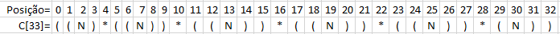

Neste jogo, o jogador tem a tarefa de encontrar uma expressão matemática cujo valor é o mais próximo a um valor escolhido aleatoriamente usando apenas as operações básicas (4 operações) e um conjunto predefinido de números. O jogo tem outras restrições: todos os resultados intermediários e o resultado final deve ser números inteiros positivos. Restrições adicionais são também colocados sobre os números selecionados e objetivo. O jogador recebe quatro números aleatórios entre 1 e 9, um número entre os 3 seguintes {10, 15, 20} e um entre os números {25, 50, 75, 100}. O número objetivo é escolhido aleatoriamente a partir do intervalo [100,999]. O jogador pode usar os números selecionados apenas uma vez. Quem tem a expressão com o número mais próximo do número objetivo terá o melhor algoritmo genético.
Exemplo:
Números gerados: 2,6,8,3,10,75 (observe a obediência aos critérios)
Número objetivo: 684
Exemplo de dois cromossomos:
((10 * (3+75)) – (2*6)*8))
(( 2 = 6) * (10+75))
A interface do software deve apresentar cada cromossomo criado a cada geração, bem como o valor do fitness. O histórico de todos os cromossomos deve ser mantido para consulta após a execução do AG.
Após a roleta deverá apresentar os casais formados identificando-os por cores iguais.
O que é?
Algoritmos Genéticos são inspirados na teoria da evolução de Darwin. Solução de um problema através de algoritmos genéticos utiliza um processo evolucionário (a solução é desenvolvida).
O algoritmo começa um um conjunto de soluções (representadas por cromossomos) chamados população. Soluções de uma população são utilizadas para formar uma nova população. Isto é motivado pela esperança que a nova população será melhor do que a primeira. Soluções que são selecionadas para formar novas gerações de soluções são selecionadas de acordo com sua adequação - quanto melhores, mais chances de reprodução terão.
Esse processo é repetido até que alguma condição é satisfeita (por exemplo o número de populações ou o aperfeiçoamento da melhor solução).
Esboço de sua aplicação
- Início: é gerada uma população aleatória de n indivíduos (conforme selecionada na configuração).
- Adequação: é feito o cálculo da aptidao para cada indivíduo, conforme sua expressão resultante.
- Nova população: uma nova população é criada repetindo os passos seguintes até que a nova população esteja completa.
- Seleção: selecione de acordo com sua aptidão (melhor aptidão, mais chances de ser selecionado) dois cromossomos para serem os pais.
- Cruzamento: com a probabilidade de cruzamento os pais são cruzados para formar até dois novos indivíduos para a nova geração. Se não realizar cruzamento, os pais selecionados passam fazer parte da nova geração.
- Mutação: de acordo com as probabilidades de mutação, os cromossomos podem sofrer uma mudança de operador em sua expressão original.
- Teste: é verificado se a solução desejada foi atingida por um dos indivíduos. Se sim, então o processamento é encerrado e o programa exibe a melhor solução da população atual. Senão, no final do programa é exibido o primeiro melhor indivíduo encontrado.
- Repita: são geradas novas populações utilizando a anteriormente gerada, até que se encontre o resultado objetivo ou se alcance o número máximo de gerações configurado.
Cromossomo
O cromossomo utilizado neste trabalho possui um vetor de genes (caracteres), com tamanho fixo de 33 posições conforme representado abaixo:

Onde:
- (: Abre Parenteses ou Vazio.
- ): Fecha Parenteses ou Vazio.
- N: Um Número ou Vazio.
- *: Uma Operação ou Vazio.
Exemplos:
Vetor: ["(", "(", "4", "", "*", "", "", "2", "", "", "*", "", "", "75", "", ")", "-", "", "", "9", "", ")", "*", "", "", "10", "", "", "-", "", "3", "", ""]
Exibição:((4*(10+9/3)/2)-75)
Vetor: ["(", "", "", "", "", "", "", "", "", "", "", "", "", "", "", "", "", "", "", "4", "", "", "+", "", "", "9", ")", "", "*", "", "75", "", ""]
Exibição: (4+9)*75
Vetor: ["", "", "10", "", "*", "(", "", "9", "", "", "*", "", "", "4", ")", "", "+", "(", "", "2", "", "", "-", "", "", "3", "", "", "-", "", "75", ")", ""]
Exibição:10*(9*4)+(2-3-75)
Primeira geração
A primeira geração de indivíduos é gerada aleatóriamente, seguindo as seguintes regras de verificação no cromossomo:
Parenteses:
- Não poderá abrir parenteses nas duas últimas posições da expressão;
- Não poderá fechar parenteses nas duas primeiras posições da expressão;
- Não poderá fechar após a ocorrência de um operador. Ex: *)
- Não poderá abrir após a ocorrência de um operando. Ex: 1(
- Só e somente poderá fechar se houver um parenteses aberto anteriormente. Ex: )())
- Só e somente poderá abrir se houver menos que 3 parenteses abertos sem terem fechados;
Operando:
- Não poderá repetir números que já compõem a expressão;
- Ocorre quando não há operadores; Expressão começa com um operando;
- Ocorre após um operador, desconsidendo todos os parenteses entre eles. Ex: *(7)
Operador:
Limpeza de parenteses:
Após a criação do cromossomo, é feita uma varredura no vetor, retirando todos parenteses desnecessários.
Por exemplo: (3)*((5)+1) -> 3*(5+1)
Aptidão
Após feita a geração de cada uma das populações é calculada a aptidão de cada indivíduo conforme abaixo:
Aptidão = |Resultado da expressão gerada - resultado objetivo|
Supondo que tenhamos um indivíduo com cromossomo (4+9)*75 = 975 e um resultado objetivo igual a 990, então:
|975 - 990| = |-15| = 15
Crossover
Cada indivíduo de um população estará sujeito a ser selecionado para realizar o crossover com um outro da mesma população.
Isto ocorre no processo de criação de uma nova população, quando é gerado um número aleatório, entre 0 e 100, e caso este for menor que a taxa de crossover escolhida na configuração do programa, são selecionados indíviduos para cruzarem.
O ponto de corte pode ser feita nas posições 2, 4, 7, 10, 13, 16, 19, 22, 25, 28, 30 do vetor de genes, ou seja, onde há operandos ou operadores.
A ecolha da posição do ponto de corte é exaustiva, dentre as acima citadas, até que se encontre um primeiro filho válido.
Caso não encontre nenhum filho válido entre o cruzamento de dois pais, são selecionados novos pais e o processo se repete.
Gerados os pais:
Vetor: ["", "", "75", "", "*", "", "", "2", "", "", "-", "", "", "10", "", "", "+", "", "", "4", "", "", "*", "", "", "9", "", "", "*", "", "3", "", ""]
Exibição: 75*2-10 +4*9*3
Vetor: ["", "", "75", "", "*", "", "", "2", "", "", "+", "", "", "10", "", "", "/", "", "(", "9", "", "", "-", "", "", "3", "", "", "-", "", "4", "", ")"]
Exibição: 75*2+10/(9-3-4)
Serão gerados os seguintes filhos, supondo que o ponto de corte é feito na posição 16 do vetor:
Vetor: ["", "", "75", "", "*", "", "", "2", "", "", "-", "", "", "10", "", "", "/", "", "(", "9", "", "", "-", "", "", "3", "", "", "-", "", "4", "", ")"]
Exibição: 75*2-10/(9-3-4)
Vetor: ["", "", "75", "", "*", "", "", "2", "", "", "+", "", "", "10", "", "","+", "", "", "4", "", "", "*", "", "", "9", "", "", "*", "", "3", "", ""]
Exibição: 75*2+10+4*9*3
Mutação
Após gerada uma população de indivíduos, cada um destes passam por um teste sujeitos a serem mutados.
Assim como no processo de crossover, para cada indivíduo é gerado um número aleatório entre 0 e 100, e se este for menor que a taxa de mutação selecionada na configuração do programa, então o indivíduo sofre mutação.
Devido a alta taxa de rejeição a indivíduos inválidados, definimos que a mutação somente irá ocorre nas posições dos operadores do vetor de genes (4, 10, 16, 22, 28).
Após ser escolhido um operador aleatoriamente, este é testado em todas as posições possíveis para a mutação. Então é escolhida a mutação de melhor aptidão.
Por exemplo:
Cromossomo gerado
Vetor: ["", "", "75", "", "*", "", "", "2", "", "", "-", "", "", "10", "", "","", "", "", "", "", "", "", "", "", "", "", "", "", "", "", "", ""]
Exibição: 75*2-10
Cromossomo mutado
Supondo que seja escolhido o operador p + e que o resultado objetivo seja 150
1º teste:
Vetor: ["", "", "75", "", "+", "", "", "2", "", "", "-", "", "", "10", "", "", "", "", "", "", "", "", "", "", "", "", "", "", "", "", "", "", ""]
Exibição: 75+2-10
Aptidão: |67 - 150| = 83
2º teste:
Vetor: ["", "", "75", "", "*", "", "", "2", "", "", "+", "", "", "10", "", "","", "", "", "", "", "", "", "", "", "", "", "", "", "", "", "", ""]
Exibição: 75*2+10
Aptidão: |160 - 150| = 10
O cromossomo mutante escolhido então será o do 2º teste, pois possui menor aptidão.